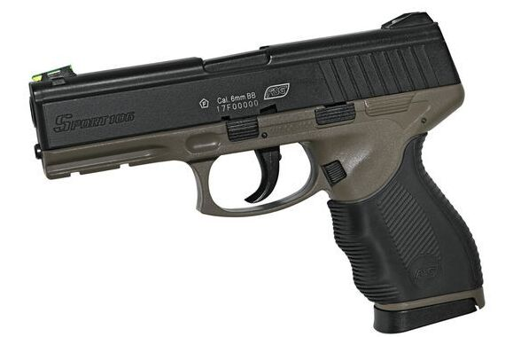
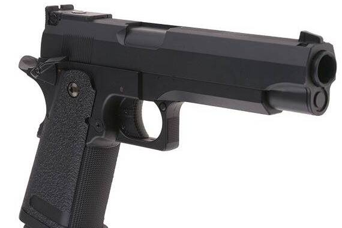
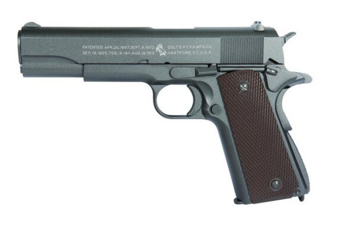
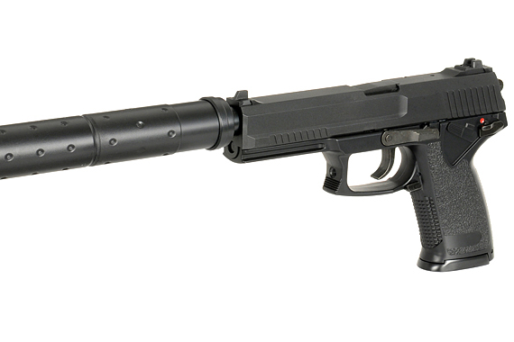
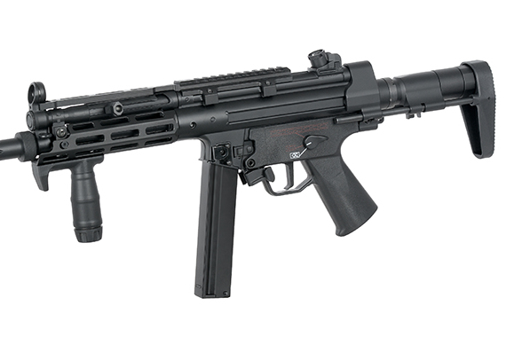
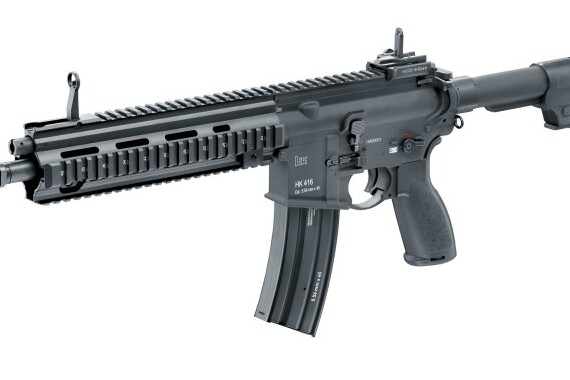
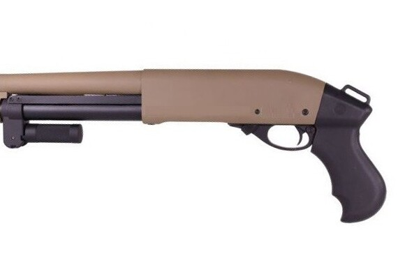
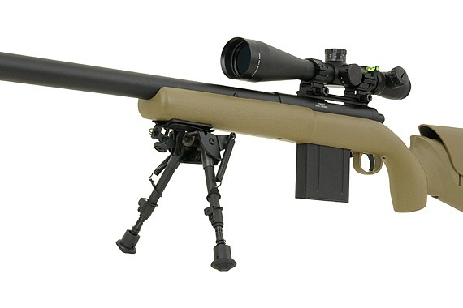

Les répliques d'airsoft se divisent en répliques principales, telles que les AEG et les GBBR, utilisées pour l'action principale, et les backups, comme les GBB et les AEP, servant de secours en cas de besoin, souvent à courte portée et discrétion. Ces répliques varient en puissance, en fonctionnement, et en réalisme pour s'adapter aux préférences et aux situations de jeu.
Les répliques de poing Spring en airsoft tirent en coup par coup, nécessitant un réarmement manuel après chaque tir. Ces répliques sont généralement utilisées à courte portée et offrent une puissance modérée pour une discrétion accrue. La culasse est fixe, simplifiant le fonctionnement.
Les AEP (Automatic Electric Pistol) sont des répliques d'armes de poing en airsoft, tirant en coup par coup ou en rafale selon le modèle, avec une batterie 7.2V spécifique. Ils sont adaptés aux courtes distances, offrant une puissance modérée pour des approches discrètes, souvent avec une culasse fixe.
Les GBB (Gaz Blow Back) sont des répliques d'armes de poing réalistes en airsoft, avec culasse mobile pour tir en coup par coup ou en rafale. Elles servent généralement comme répliques secondaires, offrant une variété de modèles tels que Glock, M9, P226, M1911, etc.
Les GNBB (Gaz Non-Blow Back) sont des répliques d'armes de poing en airsoft, avec culasse fixe pour le tir en coup par coup. Elles servent généralement comme répliques secondaires, bien que le choix de modèles soit limité, tels que le P99 et le MK23 socom.
L'AEG (Automatic Electric Gun) est une réplique d'arme électrique en airsoft, disponible en plusieurs modèles, des fusils d'assaut aux mitrailleuses, fonctionnant avec diverses batteries. Idéal pour les débutants, adaptable à tous les terrains. Exemples : M4, AK47, MP5, etc.
Les GBBR (Gas Blow Back Rifle) sont des répliques d'armes à feu, principalement des fusils d'assaut, fonctionnant au gaz. Ils offrent un réalisme accru avec un tir en coup par coup ou en rafale. Les modèles comprennent le M4, AK47, Scar, MP5, UMP, et sont privilégiés pour des jeux plus réalistes en airsoft.
Les répliques de fusil à pompe en airsoft tirent en coup par coup ou en semi-automatique selon le modèle, avec rechargement entre les tirs. Les modèles, tels que le M3 Benelli, M870, Spas12, sont privilégiés pour des jeux en courte distance.
Les répliques de sniper en airsoft tirent en coup par coup ou en semi-automatique selon le modèle, avec rechargement entre les tirs. Modèles variés comme M700, L96, AW338, Barret, privilégiés pour des jeux plus réalistes en airsoft.
